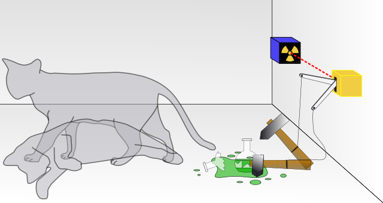

Today, I’m gonna quickly go through one of the most trending topics – Quantum Computers.
What is a quantum computer ?
Quantum Computers are devices using a quantum logic for general purpose computing. Unlike electronic computers (or traditional computers), the object quantum computing uses to store data is qubits(or quantum bits), which use quantum algorithms for data manipulation.
Quantum computing is the use of quantum-mechanical phenomena such as superposition and entaglement to perform computation. A quantum computer is used to perform such computation, which can be implemented theoretically or physically.
I guess your brains are totally messed up by those terms. Before starting to introduce superposition, let’s have a look at the most famous cat in the world and I believe you more or less have heard about this cat even you know nothing about its “owner”.
Schrodinger’s cat
Schrödinger’s cat is a thought experiment about quantum physics.

Schrodinger wrote:
One can even set up quite ridiculous cases. A cat is penned up in a steel chamber, along with the following device (which must be secured against direct interference by the cat): in a Geiger counter, there is a tiny bit of radioactive substance, so small, that perhaps in the course of the hour one of the atoms decays, but also, with equal probability, perhaps none; if it happens, the counter tube discharges and through a relay releases a hammer that shatters a small flask of hydrocyanic acid. If one has left this entire system to itself for an hour, one would say that the cat still lives if meanwhile no atom has decayed. The first atomic decay would have poisoned it. The psi-function of the entire system would express this by having in it the living and dead cat (pardon the expression) mixed or smeared out in equal parts.
It is typical of these cases that an indeterminacy originally restricted to the atomic domain becomes transformed into macroscopic indeterminacy, which can then be resolved by direct observation. That prevents us from so naively accepting as valid a “blurred model” for representing reality. In itself, it would not embody anything unclear or contradictory. There is a difference between a shaky or out-of-focus photograph and a snapshot of clouds and fog banks.
In simple terms, a cat, with a Geiger counter, and a bit of poison in a sealed box. Quantum mechanics says that after a while, the cat is both alive and dead. A person looking into the box will either find the cat alive or dead. However, quantum theory holds that if we do not uncover the lid and observe it, we will never know that the cat is dead or alive. It will always be in a superposition of alive and dead, which is seriously contrary to our daily experience.
Qubits
Qubits(or quantum bits) are fundamental to quantum computing and somewhat analogous to bits in a classical computer. Qubits can be in a 1 or 0 quantum state, but they can also be in a superposition of the 1 or 0 states. However, when qubits are measured the result is always either a 0 or a 1, the probabilities of the two outcomes depends on the quantum state they were in.
Quantum Computers VS Electronic Computers
As we know, electronic computers use bits to store and manipulate data. For say I have 4 bits storage, as I can only store either 0 or 1 in each bit at once, I’m able to store any single one of following combinations below:
0000 0001 0010 0011
0100 0101 0111 0111
1000 1001 1010 1011
1100 1101 1110 1111
However, as quantum computers use qubits for storing & manipulating data, every single qubit can be in a superposition of 0 and 1, i.e., we’re able to store all of the above sixteen combinations at once, which is 16 times of the amount classical computers store.
In simple way, for a storage unit N, quantum compouters storage will be 2^N. That means, as the amount of qubits grows, the computing speed will grow exponentially.
Summary
Quantum computers are expected to bring evolutionary and disruptive changes to the entire industry. Right now, we don’t know if they will be just a specallized tool or a big revolution for humanity. We have no idea where the limits of technology are … Let’s walk and see !